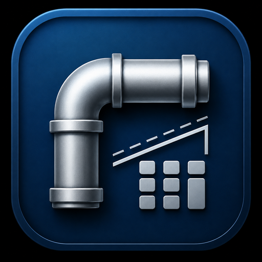
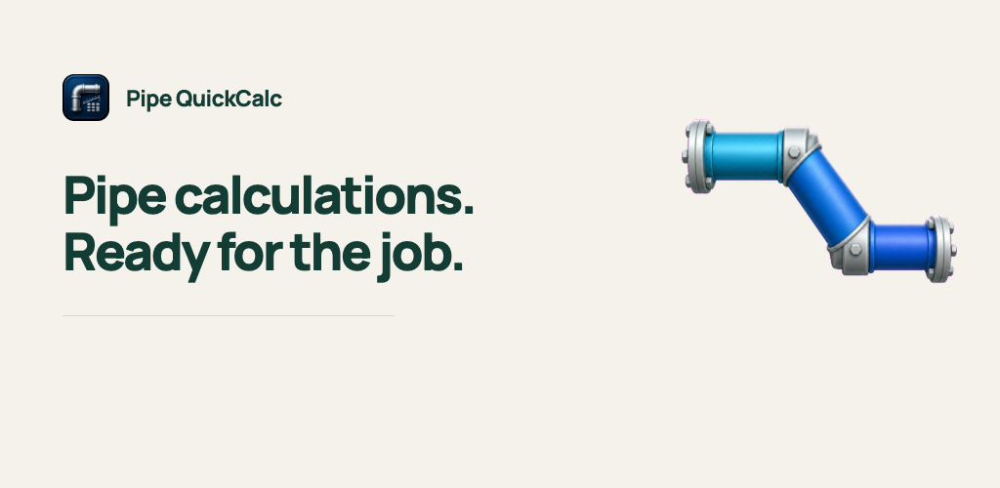
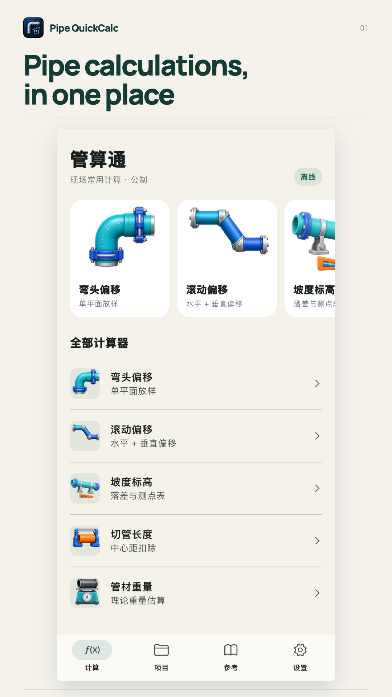
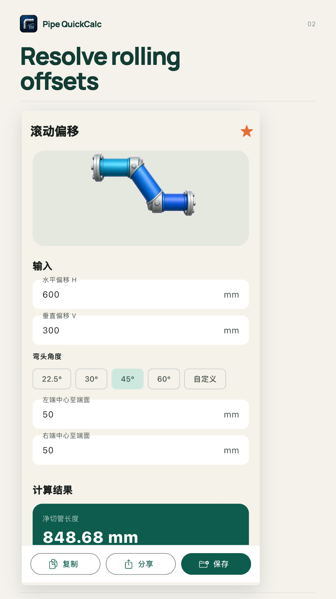
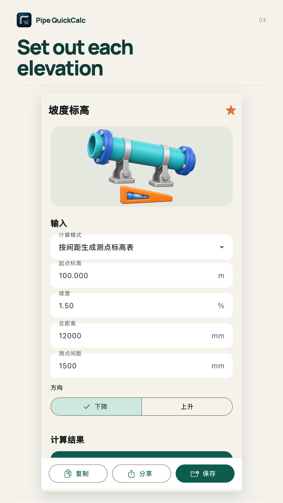
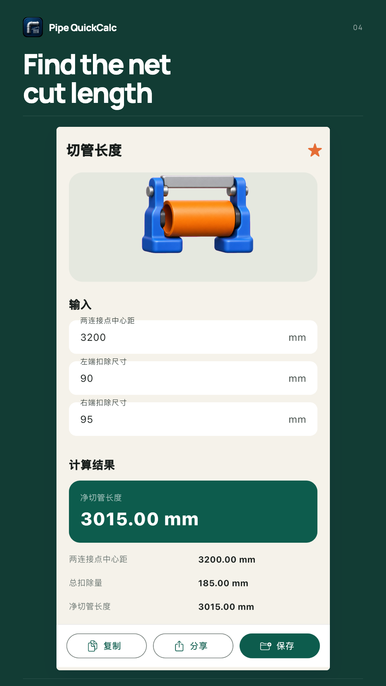
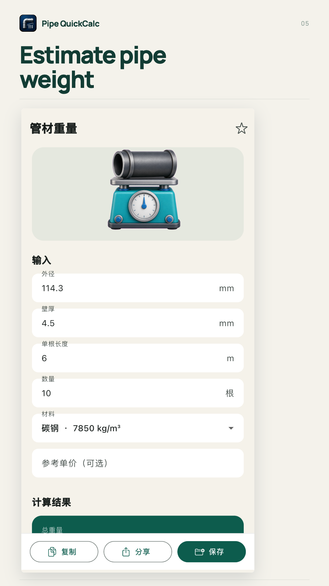

Google Play · English (United States)
SCREENSHOT DRAFTS — real iOS references; replace with Android English captures before upload.







Pipe QuickCalc: Offsets
Calculate pipe offsets, cut lengths, slopes and material weight offline.
Pipe QuickCalc brings five practical pipe calculators into one focused tool for pipefitters, welders and installation crews. PIPE OFFSETS Calculate centerline travel and horizontal advance from an offset and elbow angle. Enter fitting take-offs to find the net cut length. Use common angles or enter a custom angle. ROLLING OFFSETS Enter horizontal and vertical offsets to calculate true offset, roll angle, travel and advance. SLOPE AND ELEVATION Calculate fall from distance and slope, or work back to the slope from a known fall or start and end elevations. Generate elevation points at a chosen spacing. CUT LENGTHS Subtract the take-off at each end from a center-to-center measurement. Review the original distance, total deduction and net length together. PIPE WEIGHT Estimate theoretical weight from outside diameter, wall thickness, length, quantity and material density. View weight per metre, per pipe and for the full quantity. KEEP YOUR WORK ORGANIZED Save calculation history, group results by project, keep favorite tools close and copy or share result text. Core calculations work offline without an account, ads or subscriptions. Current calculation inputs use metric units. This is a calculation aid, not a pipe-fitting standards database or an engineering approval system. Check units, actual fitting dimensions, drawings and applicable local requirements before cutting, welding or installing.